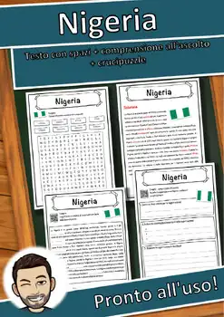
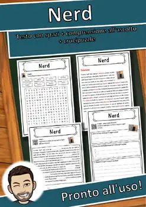
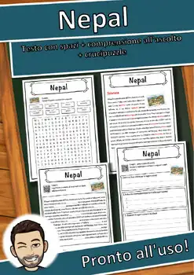
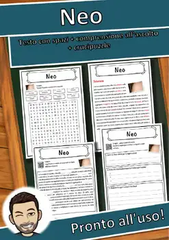
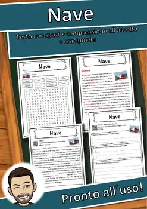
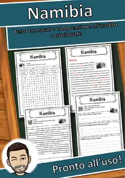
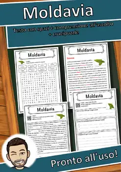
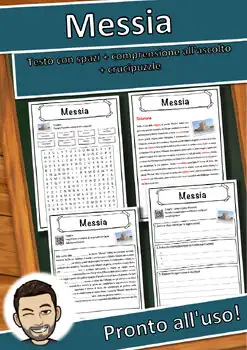
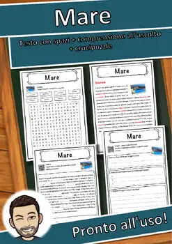
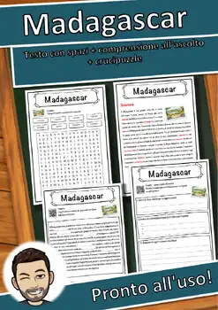

Reading Comprehension Worksheets
Informational text as a cloze passage with word bank, a QR-code listening task with free audio, and a word search – 5 pages with answer keys.
4,017 resources
Subject
Grade
By grade: 5th Grade · 9th Grade

Nigeria – Italian Reading Comprehension Worksheet (Scheda): Cloze & Listening

Nido – Italian Reading Comprehension Worksheet (Scheda): Cloze & Listening

Nichel – Italian Reading Comprehension Worksheet (Scheda): Cloze & Listening
Nicaragua – Italian Reading Comprehension Worksheet (Scheda): Cloze & Listening
New York – Italian Reading Comprehension Worksheet (Scheda): Cloze & Listening

Nettunio – Italian Reading Comprehension Worksheet (Scheda): Cloze & Listening
Nervo – Italian Reading Comprehension Worksheet (Scheda): Cloze & Listening
Nerone – Italian Reading Comprehension Worksheet (Scheda): Cloze & Listening

Nerd – Italian Reading Comprehension Worksheet (Scheda): Cloze & Listening

Nepal – Italian Reading Comprehension Worksheet (Scheda): Cloze & Listening

Neon – Italian Reading Comprehension Worksheet (Scheda): Cloze & Listening
Neolitico – Italian Reading Comprehension Worksheet (Scheda): Cloze & Listening

Neodimio – Italian Reading Comprehension Worksheet (Scheda): Cloze & Listening

Neo – Italian Reading Comprehension Worksheet (Scheda): Cloze & Listening

Nave – Italian Reading Comprehension Worksheet (Scheda): Cloze & Listening

Natura – Italian Reading Comprehension Worksheet (Scheda): Cloze & Listening

Natale – Italian Reading Comprehension Worksheet (Scheda): Cloze & Listening

Namibia – Italian Reading Comprehension Worksheet (Scheda): Cloze & Listening
Musa – Italian Reading Comprehension Worksheet (Scheda): Cloze & Listening

Mostra – Italian Reading Comprehension Worksheet (Scheda): Cloze & Listening
Morte – Italian Reading Comprehension Worksheet (Scheda): Cloze & Listening

Molibdeno – Italian Reading Comprehension Worksheet (Scheda): Cloze & Listening

Moldavia – Italian Reading Comprehension Worksheet (Scheda): Cloze & Listening
Ministro – Italian Reading Comprehension Worksheet (Scheda): Cloze & Listening

Messia – Italian Reading Comprehension Worksheet (Scheda): Cloze & Listening
Linneo – Italian Reading Comprehension Worksheet (Scheda): Cloze & Listening

Mese – Italian Reading Comprehension Worksheet (Scheda): Cloze & Listening

Mercurio – Italian Reading Comprehension Worksheet (Scheda): Cloze & Listening

Mercante – Italian Reading Comprehension Worksheet (Scheda): Cloze & Listening

Meitnerio – Italian Reading Comprehension Worksheet (Scheda): Cloze & Listening

Media – Italian Reading Comprehension Worksheet (Scheda): Cloze & Listening

Marea – Italian Reading Comprehension Worksheet (Scheda): Cloze & Listening

Mare – Italian Reading Comprehension Worksheet (Scheda): Cloze & Listening

Mar Nero – Italian Reading Comprehension Worksheet (Scheda): Cloze & Listening
Mar Morto – Italian Reading Comprehension Worksheet (Scheda): Cloze & Listening

Mar Caspio – Italian Reading Comprehension Worksheet (Scheda): Cloze & Listening

Magia – Italian Reading Comprehension Worksheet (Scheda): Cloze & Listening

Madagascar – Italian Reading Comprehension Worksheet (Scheda): Cloze & Listening

Lutezio – Italian Reading Comprehension Worksheet (Scheda): Cloze & Listening

Lotteria – Italian Reading Comprehension Worksheet (Scheda): Cloze & Listening

Lot – Italian Reading Comprehension Worksheet (Scheda): Cloze & Listening

Liquido – Italian Reading Comprehension Worksheet (Scheda): Cloze & Listening
Linz – Italian Reading Comprehension Worksheet (Scheda): Cloze & Listening

Linguaggio – Italian Reading Comprehension Worksheet (Scheda): Cloze & Listening

Lichene – Italian Reading Comprehension Worksheet (Scheda): Cloze & Listening

Licantropo – Italian Reading Comprehension Worksheet (Scheda): Cloze & Listening

Libro – Italian Reading Comprehension Worksheet (Scheda): Cloze & Listening

Libia – Italian Reading Comprehension Worksheet (Scheda): Cloze & Listening
No resources found – try a different search term or filter.